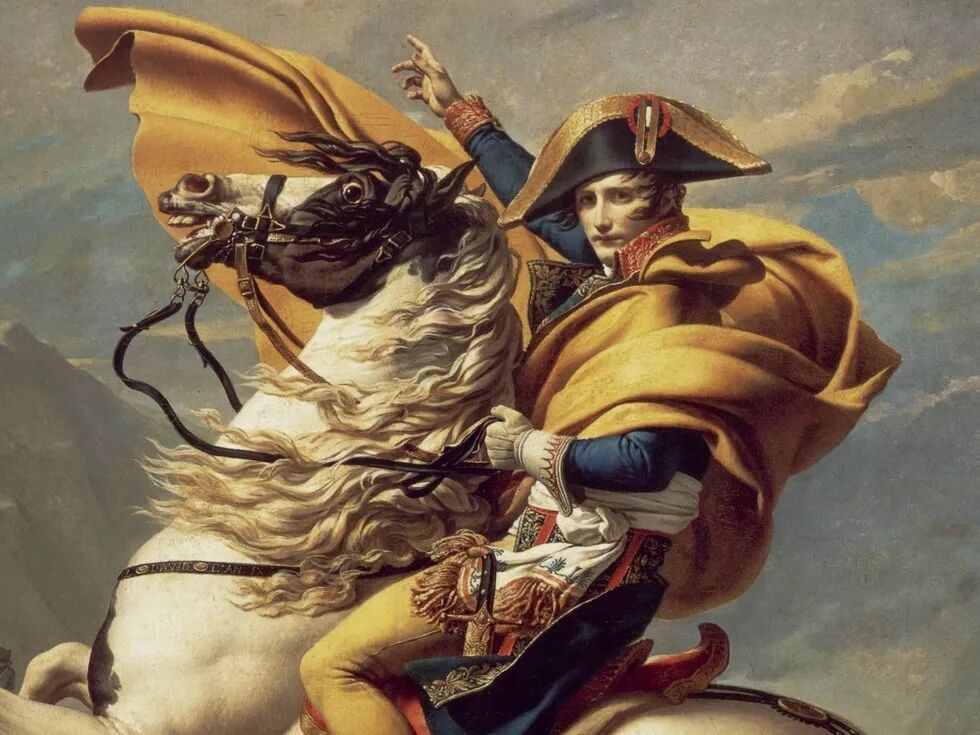
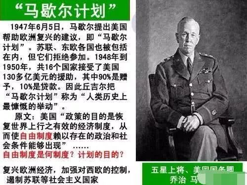
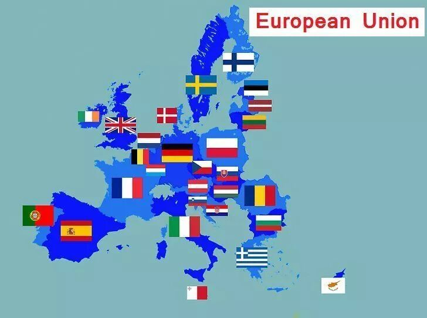
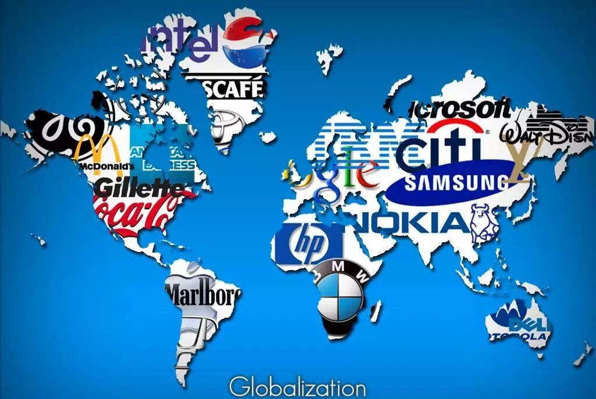

最近两周在学得到上施展老师的《国际政治学》的课。虽说加起来也就40讲，却从一个全新的角度来讲述了国际格局演化的路径，听起来颇为有趣。
要把整个课程讲完有点困难，我就从几点有意思的心得来讲讲吧。
崛起得太快往往导致战争，战败未必不好
施展老师在文中提到的几次欧洲大陆的统一以及再分裂给我留下了深刻的印象。第一次是拿破仑带领的法国统一欧洲大陆，之后又被整个欧洲大陆的贵族力量联合起来消灭的故事。后两次则是德国在一战和二战中打遍了欧洲大陆，最后又被打败的故事。

这些战争都是怎么发动的呢？都是由于征服国崛起得非常快。
拿破仑带领的法国是因为刚刚经历了法国大革命，把战争从只能动员贵族的资源变成可以动员全民的资源，从而一下子提升了国家可以拿来用于战争的资源。德国则是因为率先开启了第二次工业革命，因此成为了整个欧洲的经济枢纽。
正因为崛起得太快了，因此一下子就导致这些崛起的国家相对于别的国家来说太强大了，于是在世界上还没有一些世界警察，也没有核武器互相威慑的时候，就很容易选择爆发大规模的战争。
战争的结果往往是把整个欧洲大陆征服，然后接下来碰到的就是1. 陷入被入侵国的游击战的打击。2. 被一些第三方势力，一般是岛国（比如美国，英国）从中干预，最终战败。
不过虽然战败了，结局倒也并不是特别糟糕。拿破仑带领的法国战败以后，有一个高超的外交家从中斡旋，保住了法国的领土。之后法国逐渐恢复，又重新成为欧洲列强。而德国则得益于马歇尔计划，这主要是人们吸取了一战的教训，明白了实际上整个欧洲都是经济利益的共同体，因此把德国的经济摧毁反而会导致自身利益受损。之后德国为了更好的重建，并且让邻国相信自己不会威胁到邻国的安全，因此主动与法国合作，一起构建起欧盟的新秩序，最终重新成为了欧洲最有影响力的国家之一。

02
最好的控制手段是做生意，最差的是占领
施展老师讲到当年英国取代西班牙，是因为西班牙喜欢占领殖民地，而英国由于殖民地都被占了，于是就开始占领港口，做海盗抢西班牙的商队，反而慢慢地此消彼长，最终取代了西班牙成为了全球霸主。
之后英国维持了很久的世界霸主的地位，是因为他一直都做生意和弱控制为主，不太喜欢占领。
可惜后来德国开始崛起，然后开始打造它自己的一套封闭制度。在它控制的领地里不允许和英国做生意。这样一来英国也没办法，只要也加紧占领殖民地的步伐。这样一搞导致它做世界霸主的成本越来高，它就维持不下去了。
再后来的世界霸主是美国和苏联。美国喜欢搞贸易，不然喜欢直接控制，因为它搞的是自由经济那一套。而苏联则喜欢搞封闭的计划经济，因此需要对每个成员国直接控制，后来就也崩溃了。
03
全球的最小独立经济单元不断变大
在欧洲，最早合适的独立经济单元是一个贵族统治下的城邦。一个城邦自己就可以维持，它也可以有效地和别的城邦来往。
后来工业革命开始，工厂的大规模生产导致最合适的独立经济单元一下子变大了，变成了民族国家。
再后来随着第二次工业革命，合适的经济单位进一步变大，变成了国家联盟，也就是很多个国家的集合体。世界上出现了英美，苏联这两个大帝国，后来欧洲独立了出来，变成了第三个大的国家联盟。

而目前随着信息革命，以及正在到来的人工智能革命，以及已经深刻变迁的全球化，已经形成了一个世界联盟的格局。从第三世界出来的原材料，被运到以中国为核心的东亚地区做加工，之后送到欧美销售，形成了一整个产业的闭环。可以说合适的经济单位已经变成了全世界的大小。

而一旦形成了更大的经济单位，再想要退回到之前，永远都无法成功。
法国大革命时代，虽然拿破仑失败了，但是贵族的势力后来逐渐消亡了，都被民族国家所取代。
二战时期，德国想要走回民族国家那一套，而拒绝接受整个欧洲已经紧密地连为一体这个事实，最终失败了。欧洲最终还是走上了欧盟的道路。
而现在，随着全世界孤立主义的浪潮重新席卷，又会有一场试图拆散经济单位的大尝试。而这种徒劳的尝试，不管其形式会有多激烈，最终必将以失败告终。
04
乱，从长期来看未必不好
有一个施展提到的越战的插曲，让我觉得很有意思。
美国原本在越南之所以开展，是为了和苏联争夺东南亚的控制权的。
结果由于彩色电视技术的发展，民众们看到战争的残酷，结果纷纷反对战争。发展到后面，变成了“只要是政府觉得对的事情，我们就要反对”。
比如说，原来大家对性都很保守的，结果年轻人都表示要对性极度解放。还有大家本来都觉得应该好好努力的，结果有一部分年轻人觉得努力是不对的，就应该天天嗑药。
按理说这样国家应该毁了吧？当时看起来确实美国特别衰弱，苏联异常强大。结果美国这边这种对传统的反对催生了第三次技术革命。而苏联由于计划经济，消化完第二次工业革命的成果以后后劲不足。结果就是美国后来发展得很好，而苏联则解体了。
因此从一个长的时间周期来看，说不定一定有序的混乱反而倒是好事，比如当前的hk？？
（完）